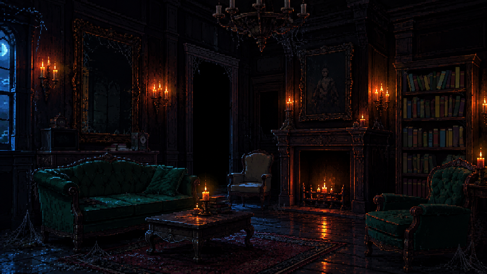
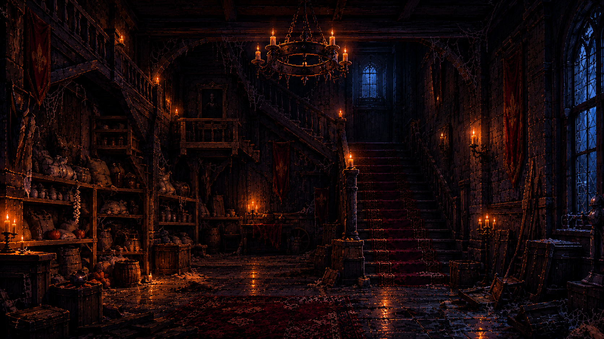
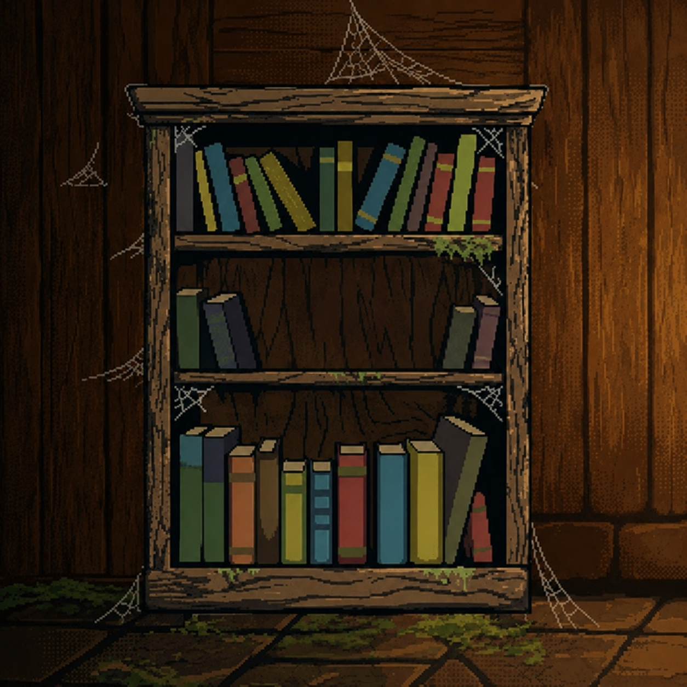

O fogo da lareira crepita suavemente, mas o frio nesta sala de leitura é de gelar os ossos. Entre poltronas antigas e sombras inquietas, a grande estante esconde um mecanismo secreto aguardando ser decifrado.

Um depósito sufocante onde o cheiro de poeira e madeira velha domina o ar. A luz fraca das velas apenas revela o contorno de objetos esquecidos, criando o esconderijo perfeito para pistas ocultas na escuridão.

Coberta por teias de aranha e o peso do tempo, esta estante guarda muito mais do que livros empoeirados. Cada lombada fora do lugar faz parte de um enigma que só pode ser resolvido encontrando os rastros espalhados pelas salas.

Imóvel nas sombras como uma sentinela silenciosa, esta armadura negra parece observar cada passo dado na sala. Em suas placas frias de metal, esconde-se uma das pistas vitais para desvendar o segredo da estante.

Um velho barril abandonado em um canto escuro, marcado pela umidade e pelo tempo. O que parece apenas mais um objeto comum de depósito guarda uma peça fundamental para decifrar a ordem correta do desafio.

Pendurado nas paredes sombrias, este antigo estandarte carrega o brasão desbotado de uma era esquecida. Seus detalhes ocultos revelam mais um fragmento do código necessário para destrancar o enigma.

Feito de tábuas escuras e reforçado com ferro enferrujado, este caixote jaz esquecido entre as sombras do armazém. Vasculhar seus cantos revela uma pista indispensável para a sequência secreta.

Um saco pesado e empoeirado, largado no chão frio como se tivesse sido abandonado às pressas. Escondido em meio à desordem do cenário, ele guarda mais um indício da ordem oculta dos livros.

Uma simples ripa de madeira escura encostada na penumbra, fácil de passar despercebida aos olhos desatentos. Ainda assim, sua presença no cenário carrega uma pista essencial para resolver o mistério da estante.

Repousando sobre uma base de pedra escura, este objeto ornamentado chama atenção mesmo na penumbra. Suas marcas antigas guardam a última peça do quebra-cabeça para revelar o segredo oculto na biblioteca.